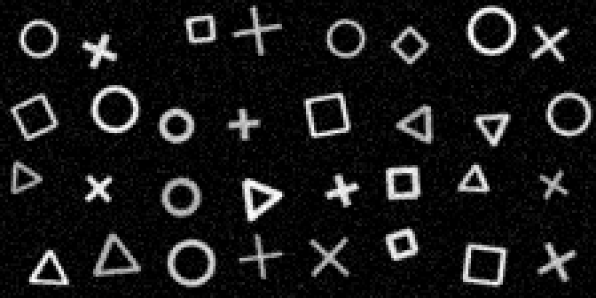

Hogyan lát a gép?
A kép számok rácsa
Egy szürkeárnyalatos képpont 0 (fekete) és 255 (fehér) közötti szám; egy 28 × 28-as kép 784 szám. Színes képen három ilyen rács van.
Konvolúció
Egy kis 3 × 3-as szűrő végigcsúszik a képen: szoroz és összead. Ahol a mintázatát (például egy élt) megtalálja, ott nagy a válasz.
| Kézi konvolúció | Érték |
|---|---|
| Kép (5 × 5) | minden sor: 0, 0, 1, 1, 1 (bal oldala sötét, jobb oldala világos) |
| Szűrő (3 × 3) | minden sor: −1, 0, 1 (függőleges élt keres) |
| Térkép (3 × 3) | minden sor: 3, 3, 0 – az élnél nagy, a csupa világos részen 0 |
| Fogalom | Jelentés |
|---|---|
| CNN | Konvolúciós háló: ugyanazokat a kis szűrőket használja a kép minden pontján, ezért mindegy, hol van a tárgy. |
| Max pooling | 2 × 2-ből a legnagyobb érték marad: a kép mérete feleződik (28 → 14 → 7). |
| Osztályozás | Egy címke a teljes képre (például „háromszög”). |
| Objektumdetektálás | Minden tárgyra: osztály + bizalom + keret. |
| YOLO | „You Only Look Once”: egyetlen futással nézi az egész képet. A yolov8n 80 osztályon előtanított, kb. 6 MB-os modell. |
| Előtanított modell | Más már betanította nagy adatkészleten; mi csak használjuk. |
A gép lát

Elfogadási feltételek
- saját repó a sablonból (például
kepek-13b-07, Public) - a
kepek.ipynbTODO-jai (a–e) kitöltve, az önellenőrzés lefut - visszamentve Colabból, a megadott commitüzenettel
- az Actions fülön a Feladatkártya 5 futás zöld (benne a képosztályozási teszt)
- a repó linkje beadva a Teams-feladatba
Lépésről lépésre
Pipáld ki, amit már megcsináltál: a böngésződ megjegyzi, hol tartasz.
-
1
Saját repó és Colab
A sablonrepón: Use this template, név
kepek-+ osztálykód + sorszám, Public. Utána Colabban: File → Open notebook → GitHub → saját repó →kepek.ipynb. Futtasd az első cellát: 16 alkatrészkép jelenik meg. -
2
a) Konvolúció kézzel
terkep = F.conv2d(kep, szuro)
A várt kimenet: minden sor 3, 3, 0 – ugyanaz, mint az 1. órán papíron.
-
3
b) Alapvonal: MLP
Ez kész kód, csak futtasd. A pontosság kb. 0,75: az MLP nem tudja, melyik képpont melyiknek a szomszédja.
-
4
c) A CNN felépítése
cnn = nn.Sequential( nn.Conv2d(1, 16, 3, padding=1), nn.ReLU(), nn.MaxPool2d(2), nn.Conv2d(16, 32, 3, padding=1), nn.ReLU(), nn.MaxPool2d(2), nn.Flatten(), nn.Linear(32 * 7 * 7, 32), nn.ReLU(), nn.Linear(32, 4), )Ellenőrzés: a kimenet
torch.Size([1, 4]), a paraméterek száma 55 140. -
5
d) Tanítás és képosztályozási teszt
tanit(cnn) cnn_pont = pontossag(cnn, Xv, yv)
Kb. fél perc. A teszt: legalább 93% a 600 tesztképen; a CNN kb. 98%-ot ér el.
-
6
e) YOLOv8
emberek = nevek.count("person")Előtte futtasd a
%pip install -q ultralyticscellát. A várt eredmény: 1 busz és 3 ember. Utána az önellenőrző cella. -
7
Mentés, zöld build, beadás
File → Save a copy in GitHub → saját repó,
main, fájlnévkepek.ipynb. Commitüzenet:feat: képfelismerés CNN-nel és YOLO-val (feladatkártya #5)
Az Actions fülön a Feladatkártya 5 futás legyen zöld (az első futás 3–4 perc). Utána add be a repó linkjét a Teams-feladatba.
Hasonló méret, sokkal jobb eredmény
Az MLP-nek 50 500, a CNN-nek 55 140 paramétere van, a CNN mégis kb. 98%-os a 75%-kal szemben. Nem a méret számít, hanem az, hogy a szűrő a kép minden pontján ugyanazt a mintázatot keresi.
A teljes folyamat Colabban
Mire jár pont a feladatkártyán?
| Szempont | Pont | Mikor jár? |
|---|---|---|
| Zöld build | 2 | A „Feladatkártya 5” futás mind az 5 tesztje sikeres, köztük a képosztályozási teszt. |
| Határidő | 1 | A 2. óra végéig. |
| Commitüzenet | 1 | feat: képfelismerés CNN-nel és YOLO-val (feladatkártya #5) |
| Kilépőkérdések | 1 | Mindkét óra kilépőkérdéseire érdemi válasz. |
| Összesen | 5 |
Extra (+1 sprintpont): futtasd a YOLO-t conf=0.25-tel, és írd le két mondatban: mi jelent meg pluszban, és mi a kockázata a túl alacsony és a túl magas küszöbnek egy minőségellenőrző kameránál?
A leggyakoribb hibák
mat1 and mat2 shapes cannot be multiplied (1x1568 …)
A Flatten utáni Linear bemenete 32 * 7 * 7 (1568) legyen; vagy kimaradt egy MaxPool2d(2).
A paraméterek száma nem 55 140
Rossz csatornaszám (1 → 16 → 32) vagy hiányzik a padding=1.
A pontosság 0,25 körül marad
Kimaradt a tanit(cnn) hívás vagy a ReLU-k.
ModuleNotFoundError: No module named 'ultralytics'
Az e) rész első cellája (%pip install -q ultralytics) nem futott le.
AttributeError: 'ellipsis' object …
Egy TODO még nincs kitöltve: a ... helyére írd a megoldást.
„Copy of …” néven mentett
A fájlnév pontosan kepek.ipynb legyen, különben a CI nem találja.
Kilépőkérdések
- Mit csinál egy 3 × 3-as szűrő a képpel?
- Miben más az osztályozás és az objektumdetektálás kimenete?
- A CNN-nek és az MLP-nek hasonló a paraméterszáma. Miért tanul mégis jobban a CNN?
- Mit jelent, hogy a YOLO „előtanított”, és miért hasznos ez egy cégnek?
Beszélgetés a modellel – LLM és promptolás
A YOLO kész modell volt. A nyelvi modellek is azok, csak a bemenet szöveg, és promptokkal irányítjuk őket.